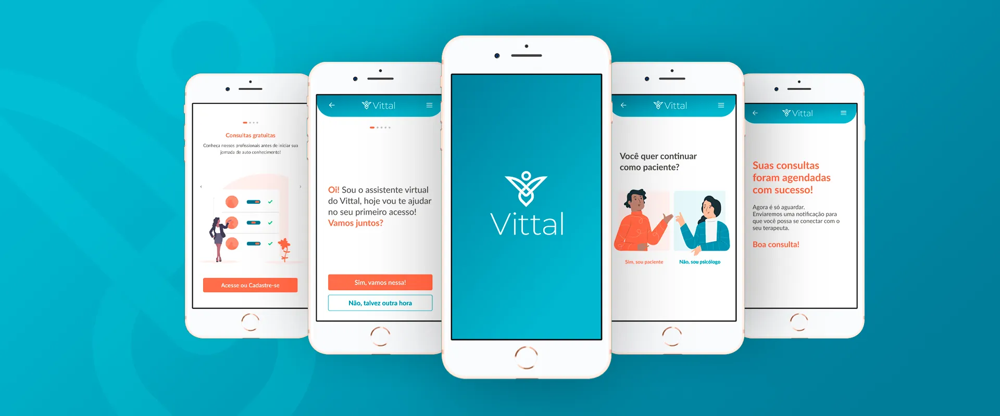
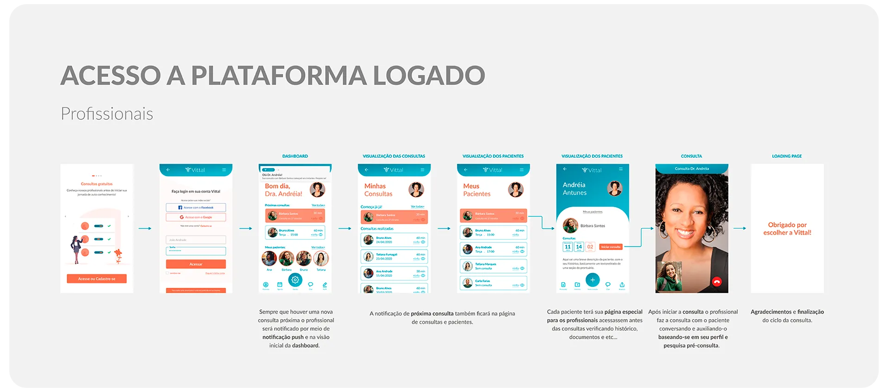

Connecting Psychologists and patients in times of social distance
How might we connect and empower psychologists and patients in a simple way, while addressing the specific needs of each one?
The Initial Challenge
How might we help Brazilians living abroad take care of their mental
health without feeling disconnected from home?
How might we support psychologists in managing and growing their
businesses while they focus on providing psychological care?
Current Scenario
The COVID-19 pandemic has propelled the adoption of virtual care solutions for mental health worldwide, with technologies like WhatsApp, FaceTime, and Zoom becoming essential tools for maintaining treatment. In Brazil, Resolution CFP nº 011/2018 paved the way for remote psychological counselling even before the pandemic. However, despite these advancements, over 3 million Brazilians living abroad, including a growing number of students, often face challenges accessing adequate mental health support. This underserved demographic highlights the need for targeted initiatives like this project, which aims to provide tailored mental health solutions for Brazilian students abroad, addressing their unique needs and contributing to their overall well-being and academic success.
Competition Analysis

The Users

Persona: Students
Students who live outside of Brazil and would like to feel closer to home and the community, especially when they need to talk about their feelings.

Persona: Psychologist
Psychologists who are looking to become entrepreneurs but were not trained for it, and as they are 100% focused on their patients, they end up putting the business in second place.

User Journey Student

User Journey Psychologist

User Definition Through Pixar Storytelling
Student
Psychologist
The Research
Qualitative Research
To conduct qualitative research, we adopted the interview anatomy
model, as shown below.
This guide helped us explore stories based on past and real
experiences, allowing the interviewee to relive those experiences
and thus connect more deeply with us. That is, to feel what our user
was feeling and achieve deeper empathy.
Qualitative Research

In addition to the above data, we identified that among the difficulties with online consultations, only technical issues (such as equipment quality or internet connection) and patients having difficulty with the technology are the most concerning. We discovered that other situations that are not problematic for professionals include scheduling, personal difficulty with the tools, and staying focused. On the other hand, the biggest challenges and concerns with remote consultations are the lack of privacy and building a relationship with new patients. Many agree that remote consultations do not replace in-person ones (62%), but they understand that it is very important (40%).
In addition to the data above, it is worth noting that among patients who do not have online consultations, 43% did not receive this proposal from the professional and 23% were unaware of online services. Of these patients, 31% are not interested in online consultations, while 69% are interested.
The Reframed Challenge
The Solution
Ideation
After defining the challenges, we moved on to our ideation phase. To do this, we conducted rounds of idea generation, as well as using tools such as Crazy 8’s, allowing for the adaptation of ideas to a digital product context, as shown in the images below.


Evaluation Matrix
The prioritised ideas were grouped into categories: patients, psychologists, and the connection between them. These categories were then used to define the features that would be included in our first low-fidelity prototype.
Prototyping
Low-fidelity Prototype
Using Marvel, we conducted low-fidelity prototype testing with 12 users. Below, you can see the flow we used to animate and test our ideas.
This first round of testing showed us what we should keep, discard, improve, and include for the creation of wireframes.
Wireframing
These are the wireframes. The user flow allowed us to map which routes among the features were best for each audience in a fast and objective way.
High-fidelity Prototype
We proceeded to the high-fidelity prototype phase. To do so, we began by creating the user flow of the app and the corresponding style guide, which would serve as a basis for building the prototype on Figma.
User-flow
Style Guide
Color Palette
We selected high-impact and contrasting colours: blue and orange. We defined warm and cool tones, created differentiation elements, and established levels and hierarchies for buttons and texts. Additionally, we chose alert and success colours inspired by Bootstrap and opted for an open-source web framework for interface components, websites, and applications.
Typography
We chose Lato by Łukasz Dziedzic as the font, conveying modernity and being more objective and minimalist. Choosing a sans-serif font is important to promote character resizing without any distortion or illegibility. We also used the perfect fourth proportions to ensure balance and sobriety between the texts.
Buttons
We used the main colours from the initially defined colour palette. Two styles of buttons were used, solid and ghost, creating a hierarchy between elements when presented together. Border radius was also used to convey lightness, modernity, and create a more pleasing layout.
Forms and Fields
Text fields followed the same styles and used alert colours to indicate possible errors and successes, keeping the user informed of what was happening.
Icons
Accessibility and icons are strong allies when it comes to users with mental disabilities and other reading difficulties. They convey credibility, accessibility, and a more modern layout.

The Usability Test
User and Business Metrics
- The number of people who were able to schedule a consultation with the help of the bot.
- Simplicity: registration, filter application (country, state, city, symptoms), psychologist selection, and appointment scheduling in under 5 minutes.
- HEART framework adapted for testing, focusing on: Happiness during prototype testing. Engagement goes beyond initial expectations. Adoption interest during product launches. Retention potential as a problem-solving or lifestyle product. Task Success: Completing the process outlined in point 2.
Prototype Testing
For the test, we sent the link to our prototype in Figma to people and presented a context, indicating the task they needed to perform without any interference from us.
Navigation Feedback
- Clarify the prototype goals and limitations.
- Ensure the consistent functionality of navigation buttons.
- Highlight the remaining consultation steps.
- Prevent the bottom menu from disappearing.
- Consider repetitive information for scheduling.
- Differentiate between the Psychologists and My Appointments buttons.
- Filter psychologists before displaying.
- Positive response to automatic diary messages.
- Ensure consistency in diary access.
- Include previous consultations in the My Appointments section.
Conclusion and Learnings
After two weeks of the project, we achieved a surprising result and gained deep knowledge about the market, the problem, the users, and the solution. However, we understand that we have not finished here. We need to improve usability, have a clearer definition of what our MVP (Minimum Viable Product) is, go through some more iteration sprints, and look at basic business plan issues that go beyond a design project, such as financial analysis, pricing strategy, and business model, technological platform development, marketing planning, among others. As of the completion of this article, we held some meetings with market people interested in moving forward with the solution.